7.1 รายการงานมอบหมาย#
เป้าหมายของขั้นตอนนี้ ดูภาพรวมงานทั้งหมดในรายวิชา แยกตามประเภทงาน
- เข้าเมนู จัดการงานและคะแนน แล้วเลือก งานในชั้นเรียน
- เลือกประเภทงานจากแท็บด้านบน
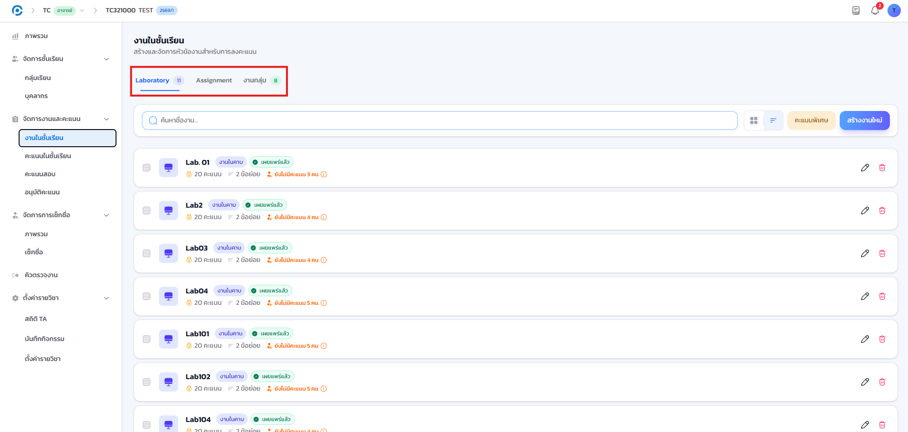
- แต่ละรายการงาน
- แสดงสถานะการเผยแพร่ คะแนนเต็ม จำนวนข้อย่อย และจำนวนผู้ที่ยังไม่ได้รับการตรวจ
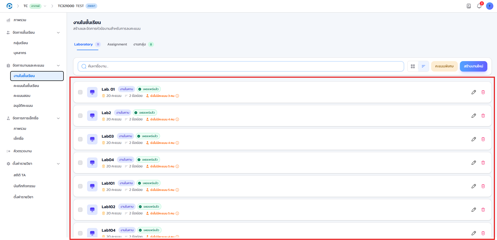
หากต้องการเปลี่ยนลำดับการแสดงงานในรายการ สามารถลากรายการงานสลับตำแหน่งกันได้โดยตรง เป็นความสะดวกเสริม ไม่มีผลต่อคะแนนหรือการเผยแพร่งาน
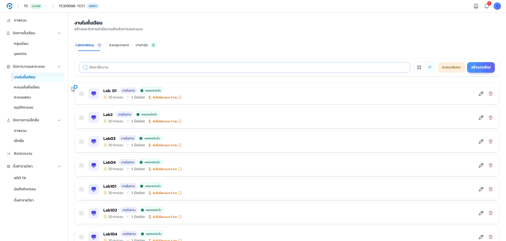
7.2 สร้างงานใหม่#
เป้าหมายของขั้นตอนนี้ สร้างงานมอบหมายใหม่พร้อมกำหนดรูปแบบคะแนนและเงื่อนไขที่ต้องการ
- คลิกปุ่ม สร้างงานใหม่ ระบบจะเปิดหน้าต่างให้กำหนดรายละเอียด
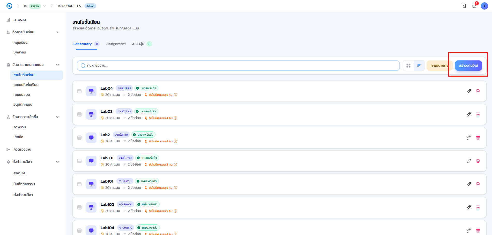
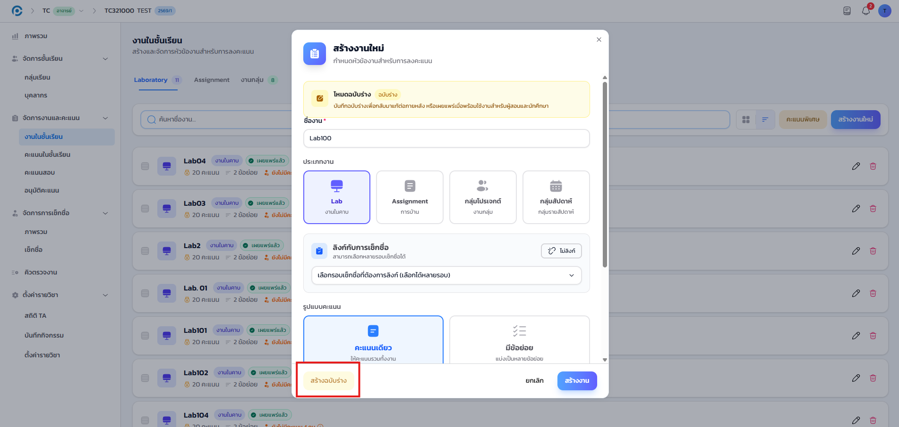
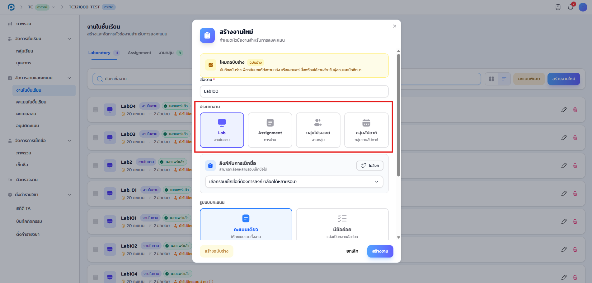
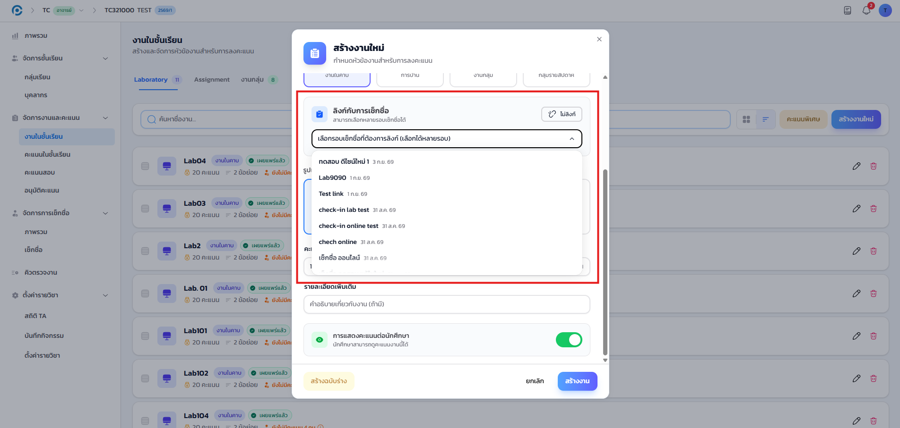
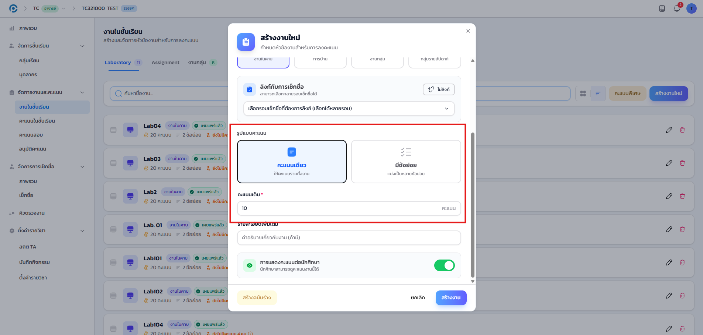
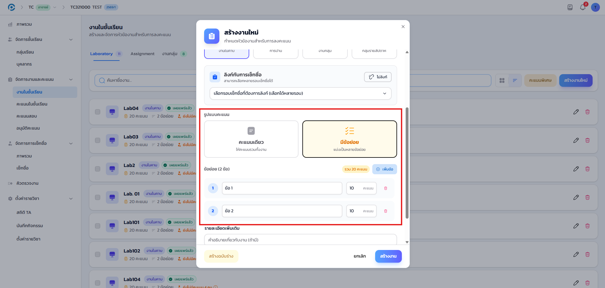
เมื่อกำหนดครบและคลิกปุ่ม สร้างงาน งานใหม่จะปรากฏในรายการทันที ตามสถานะที่เลือกไว้ (ฉบับร่างหรือเผยแพร่แล้ว)
7.3 การให้คะแนน#
เป้าหมายของขั้นตอนนี้ ดูภาพรวมคะแนนของนักศึกษาทุกคน และบันทึกคะแนนรายบุคคลหรือเป็นกลุ่ม
- เข้าเมนู จัดการงานและคะแนน แล้วเลือก คะแนนในชั้นเรียน
- เลือกประเภทงานจากแท็บด้านบน ระบบจะแสดง ตารางคะแนนรวม ของนักศึกษาทุกคนเทียบกับทุกงาน พร้อมค่าเฉลี่ยของแต่ละข้อ
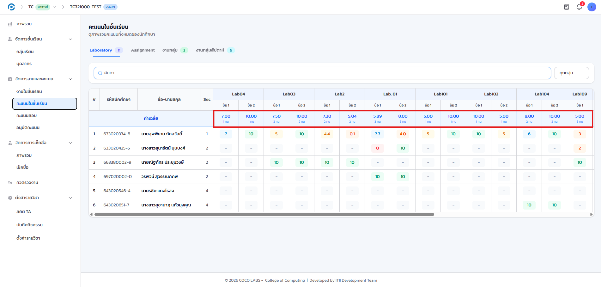
- คลิกที่ ช่องคะแนน ของนักศึกษาแต่ละคนเพื่อดูรายละเอียดและบันทึกคะแนน
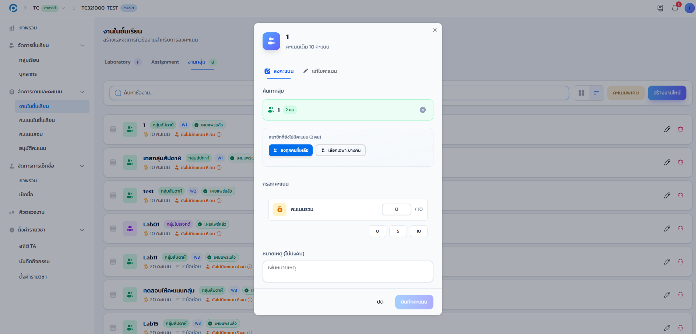
นอกจากการให้คะแนนรายบุคคลแล้ว ระบบยังรองรับการให้คะแนนแบบกลุ่มและแบบหลายคนพร้อมกัน (bulk) ตลอดจนการดูรายการนักศึกษาที่ยังไม่ได้รับคะแนน เพื่อไม่ให้ตกหล่น
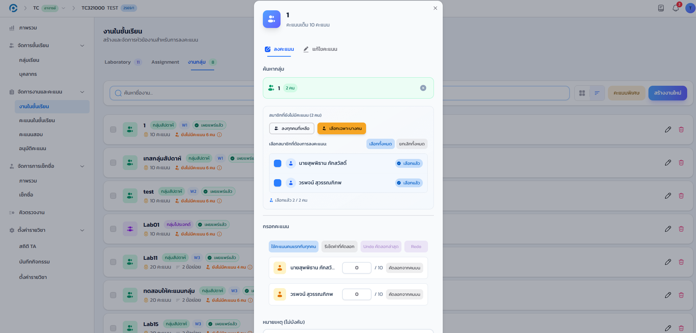
7.4 คะแนนพิเศษ (ถาม-ตอบ)#
เป้าหมายของขั้นตอนนี้ ให้คะแนนเสริมแก่นักศึกษาที่ตอบคำถามในห้องเรียน และแก้ไขรายการที่ให้ไปแล้วเมื่อจำเป็น
คู่มือฉบับก่อนหน้าอธิบายฟีเจอร์นี้เป็นคะแนนโบนัสอเนกประสงค์ ในความเป็นจริงปุ่มนี้ระบุชัดเจนว่าเป็น "ให้คะแนนพิเศษ (ถาม-ตอบ)" และเหตุผลที่บันทึกไว้เป็น "ตอบคำถามในห้องเรียน" เสมอ จึงเหมาะสำหรับให้คะแนนการมีส่วนร่วมในชั้นเรียนเท่านั้น หากต้องการให้คะแนนเหตุผลอื่น กรุณาใช้การสร้างงานตามข้อ 7.2 แทน
- คลิกปุ่ม คะแนนพิเศษ ที่หน้ารายการงาน ระบบจะเปิดหน้าต่างให้คะแนนพิเศษ
- ที่แท็บ ให้คะแนน ใช้ ค้นหานักศึกษา แล้วเลือกรายชื่อ ระบบจะให้คะแนนพิเศษทันที
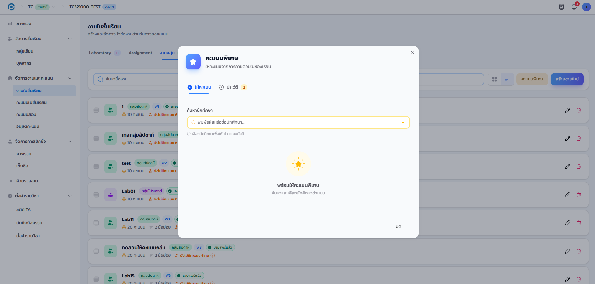
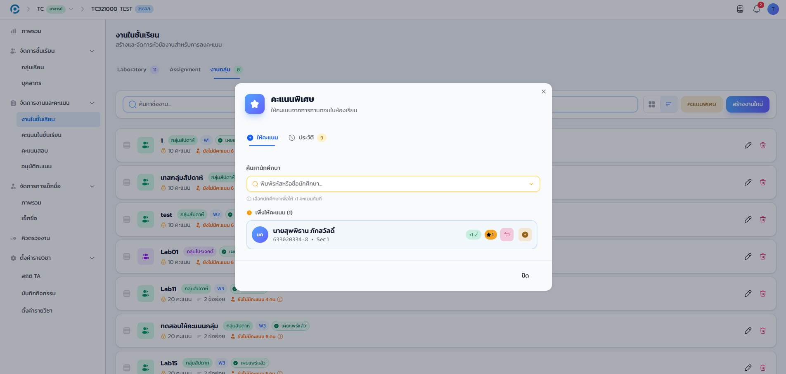
รายการคะแนนพิเศษที่เพิ่งให้ไปปรากฏในแท็บ ประวัติ ทันที พร้อมชื่อนักศึกษาและเหตุผล "ตอบคำถามในห้องเรียน"
7.4.1 ยกเลิกหรือลบรายการคะแนนพิเศษ#
เป้าหมายของขั้นตอนนี้ แก้ไขคะแนนพิเศษที่ให้ผิดพลาด ด้วยการยกเลิกรายการล่าสุดหรือลบรายการที่ต้องการ
- สลับไปแท็บ ประวัติ เพื่อดูรายการคะแนนพิเศษที่เคยให้ไปแล้วทั้งหมด
- คลิก ยกเลิกล่าสุด เพื่อยกเลิกรายการที่เพิ่งให้ไปล่าสุดอย่างรวดเร็ว
- หรือคลิกไอคอนลบที่แถวของรายการใดรายการหนึ่งโดยเฉพาะ เพื่อลบรายการนั้นทิ้ง
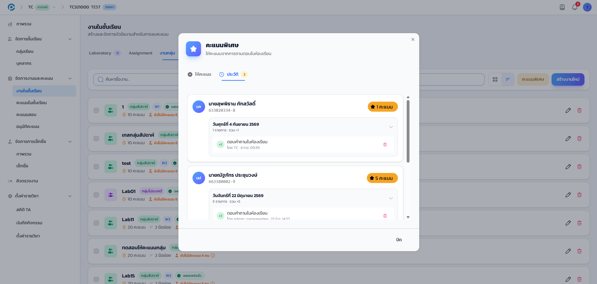
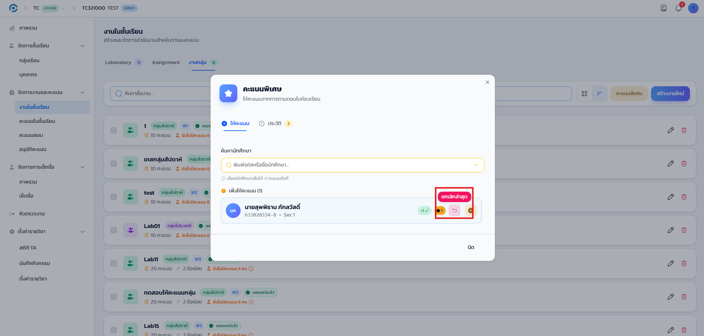
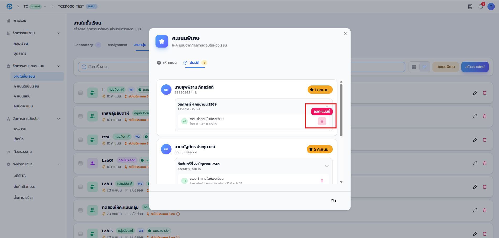
การลบรายการคะแนนพิเศษมีผลทันทีต่อคะแนนรวมของนักศึกษาคนนั้น กรุณาตรวจสอบให้แน่ใจว่าเลือกรายการถูกต้องก่อนลบ